App Inventor2（以降AI2）とNode-REDの連携
今回は、Node-REDと連携するプログラムを作ってみます。
「Camera コンポーネントで撮像した画像ファイルを、Web コンポーネントのPostFileで、Node-REDに送信しファイル保存する」というプログラムを作成します。
Node-REDは、ハードウェアデバイス／API／オンラインサービスなどを相互に接続するために開発されたビジュアルプログラミング開発ツールです。
ローコード 開発を目指して作られており、上記程度の内容なら（画像ファイルを受信し、ファイル保存する）、Pythonよりも簡単に実現することが可能です。
Node-REDのインストールや使い方は、こちらを参考にしてください。
作成したAI2のプログラムはこちらに置いておきます。本ページではポイントを説明します。
デザイナーでの作業
以下のように配置しました。
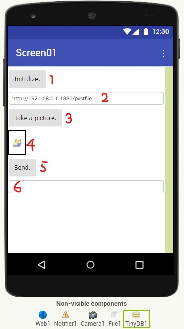
- 「Initialize.」ボタン
- 初期化します。
- テキストボックス
- URLを設定するテキストボックスです。
- TinyDB コンポーネントを利用して、前回起動時の設定値を保存しておけるようにします。
- 「Take a pictures.」ボタン
- Camera コンポーネントを起動します。
- キャンバス
- Camera コンポーネントで撮像した画像を表示します。撮像した画像はファイルに保存されます。
- 「Send.」ボタン
- Node-REDに画像ファイルを、HTTPのPostメソッドを使って送信します。（Web コンポーネント）
- 送信後、画像ファイルを削除します。（File コンポーネント）
- テキストボックス
- 保存された画像ファイルのパス名、進捗などメッセージを表示します。
ブロック エディターでの作業
以下のように配置しました。
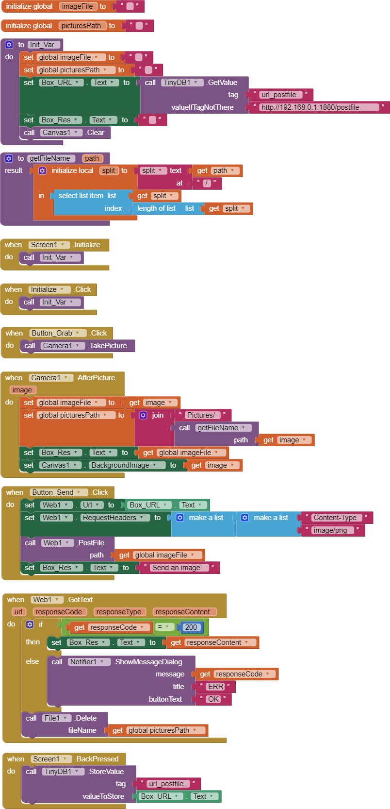
ポイントを簡単に説明します。
- 「Init_Var」関数（Procedures）
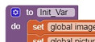- 初期化を行う関数です。
- アプリケーションが起動した時に、「Initialize.」ボタンが押された時に実行されます。
- 「getFileName」関数（Procedures）
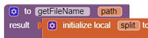- フルパスからファイル名のみを取得する関数です。
- 「/」で分割し、得られた配列の最後の文字列を返します。
- 「Take a picture.」ボタンを押した時に、カメラ アプリが起動します。
- カメラ アプリ内で「保存」が押された時に、以下が実行されます。
- 得られる引数「image」は保存された画像のフルパスが入っています。他でも使えるようにグローバル変数「imagePath」に代入します。
- File コンポーネントで操作できるパスに変換し、グローバル変数「picturesPath」に代入します。
- AI2で扱えるパスについては、「Some basics on Android storage system」を参考にしてください。
- 「Send.」ボタンを押した時に、Web コンポーネントのPostFileが実行されます。
- レスポンスが返ってきたら、レスポンスの表示と撮像した画像の削除を行います。
- スマホの戻るボタンが押されたら、TinyDBにURLが保存され、次回起動時に利用されます。
Node-REDの設定
Node-REDのフローチャートは非常に簡単です。以下のようなフローチャートを作りました。
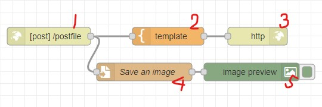
- 「http in」ノード
- 設定は
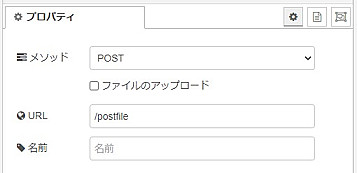 - これだけでサーバー機能が動作します。
- 設定は
- 「template」ノード
- ファイルを受け取ったら、「Receive !」を返します。
- 設定は
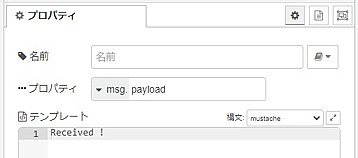
- 「http response」ノードは設置するだけ
- 「file」ノード
- 設定は
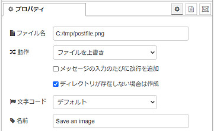 - 本例では、「c:/tmp/postfile.png」に書き込まれます。
- 設定は
- 「image」ノードは設置するだけ
- もしインストールしていなければ、インストールしておきましょう。画像を扱う際には必須のノードです。
実行画面の例
AI2の起動画面。
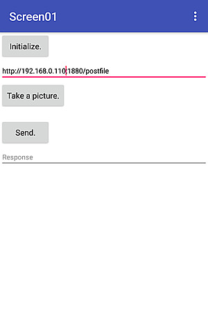
「Take a picture.」ボタンでカメラ アプリを起動し、撮像と保存を行った時のAI2の画面。
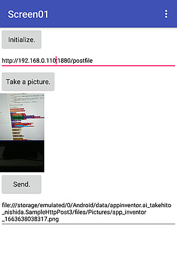
「Send.」ボタンを押した時。
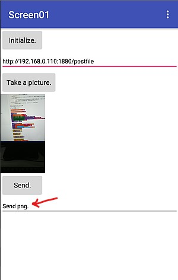
Node-REDで受信が完了した時。
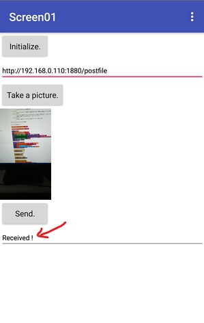
画像を受信した時のNode-REDの画面。
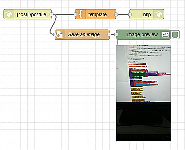
Python以上に簡単でした。ハマれば強力です。